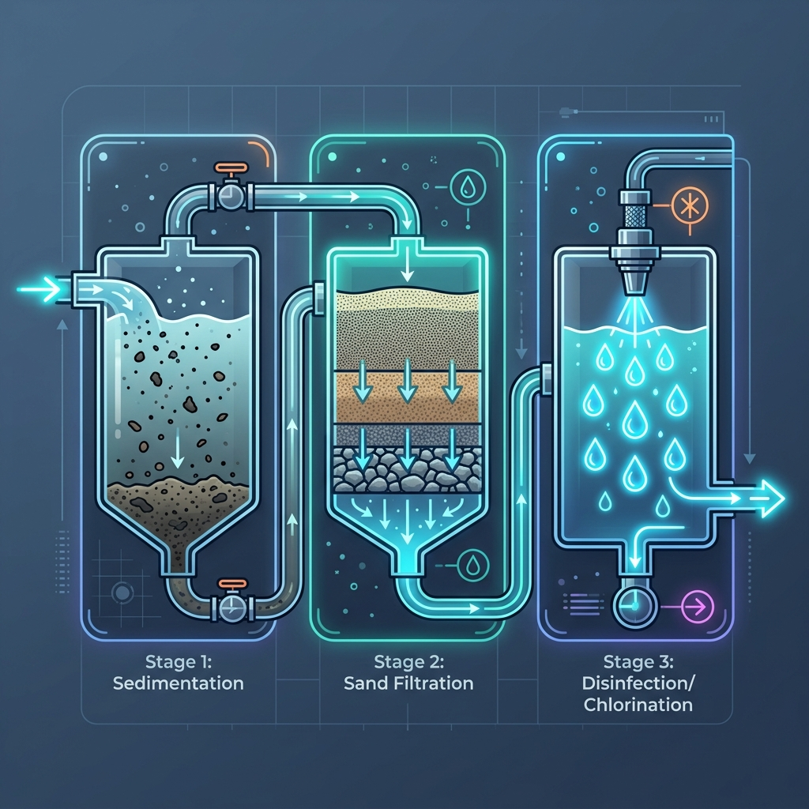
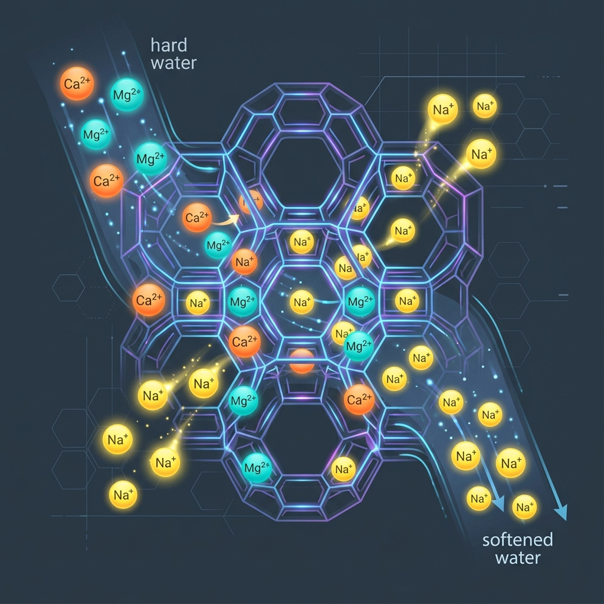

1. What are Building Services? (MEP Works)
Building services refer to the mechanical, electrical, and public health systems that provide water, energy, comfort, safety, and sanitation in buildings. It involves MEP works. Building services are usually divided into three major categories:
- 1. Mechanical Services: These systems involve heating, cooling, ventilation, and air movement in buildings. Examples include:
- Heating systems
- Air conditioning systems
- Mechanical ventilation
- Elevators and escalators
- Smoke extraction systems
- 2. Electrical Services: These systems supply and distribute electrical power and lighting in a building. Examples include:
- Electrical power distribution
- Lighting systems
- Backup generators
- Fire alarm systems
- Security systems
- Communication systems (data and internet)
- 3. Plumbing: These systems deal with water supply and sanitation. Examples include:
- Cold water supply
- Hot water supply
- Plumbing systems
- Drainage systems
- Sewage disposal
- Stormwater drainage
- Fire protection systems
2. Guidelines and Oversight Authorities
In Kenya, the guidelines, standards, and codes for plumbing and sanitation are primarily provided by a combination of national government ministries, regulatory boards, and professional bodies. The key authorities are:
- Kenya Bureau of Standards (KEBS): Specifies quality standards, material standards for pipes, fittings, and appliances.
- Water Services Regulatory Board (WASREB): A national regulator that sets national standards, guidelines, and rules for water and sewerage services, ensuring compliance with the Water Act 2016 and the human right to sanitation.
- Ministry of Water, Sanitation and Irrigation (MoWSI): Responsible for policy development regarding sanitation management and water supply services.
- Ministry of Public Works – Mechanical & Drainage Department: Defines technical specifications, installation methods, and testing standards for plumbing systems.
- National Construction Authority (NCA): Regulates the construction industry, ensuring standards in building works, including plumbing.
- Kenya Water Institute (KEWI): Develops technical manuals for water supply and sanitation, including the Practice Manual for Water Supply Services in Kenya.
- County Governments: Responsible for enforcing standards and implementing county-specific water and sanitation strategies and local authority by-laws.
- Professional Boards (EBK, BORAQS): Registered Engineers (ERB) and Architects (BORAQS) must sign off on plans, ensuring they meet professional standards.
- The Institution of Engineers of Kenya (IEK)
3. Key Regulations and Codes
- The National Building Code 2024: Sets technical requirements for building services, including plumbing.
- Water Services Regulations, 2021/2024: Governs the provision of water and sewage services across the country.
- Public Health Act (Cap 242): Oversees sanitation and hygiene standards to prevent nuisance.
- Environmental Management and Coordination (Water Quality) Regulations: Ensures safe disposal of wastewater.
- Sewerage and Sanitation Design Manual: Used for designing sewerage systems.
4. Categories of Water Consumption in Kenya
- Domestic: e.g. drinking, cooking, ablution, sanitation, laundry, garden watering, and bathing pools.
- Trade and industry: e.g. factories, power stations, shops, hotels, hospitals, schools and in offices.
- Agriculture: e.g. horticulture, greenhouses, dairies, and livestock farms, etc.
- Public use: e.g. parks, schools, hospitals, street watering, sewer flushing and firefighting.
5. Plumbing vs Drainage and Common Plumbing Issues
In truth 'plumbing' involves plumbing and drainage system and one needs to differentiate the two.
PLUMBING: Plumbing involves the installation pipes, fixtures, and apparatus to supply potable water to a building. It encompasses the entire network—including pipes, tanks, and valves—that brings clean water in.
Most common plumbing issues include:
- Leaky pipes: can be caused by pipe corrosion, pipe joint damage, excessive water pressure and a host of other issues.
- Low water pressure: can be a symptom of a more significant problem such as hidden water leaks and blocked pipes.
- Faulty water heater: possible causes include incorrect water pressure, a broken electrical connection and aging equipment.
- Running toilet: a damaged flush valve or faulty flushing handle could be to blame.
- Clogged toilet: often caused by flushing objects that should not be flushed.
- Water heater problems: among the possible causes are sediment build-up and heating element failures.
Main Components of Plumbing: a) Water Source, b) Storage Tanks and distribution, d) Distribution Pipes, e) Fittings-valves, f) Fixtures.
1. Water Source
There are 3 main sources of water:
- i. Rainfall.
- ii. Surface sources: Lakes, streams, rivers, reservoirs, run off from roofs and paved areas.
- iii. Underground sources: Shallow wells, deep wells, artesian wells, artesian springs, land.
2. Purification Processes
Some purification of water is often necessary to remove impurities and possibly to reduce the hardness of water. Purification may involve three major processes as follows:
- a) Sedimentation: Sedimentation is the process where heavy particles settle at the bottom of a tank due to gravity. Sludge accumulates at the bottom and clarified water moves to the next stage.
- b) Filtration: Filtration is the process of passing water through porous materials to remove suspended particles.
- c) Treatment-Chlorination
3. Filtration of water: i) Pressure filter
A pressure filter is a closed filtration system where water is forced through filter media under pressure to remove suspended particles and impurities. Unlike slow sand filters, pressure filters operate inside a sealed tank.
How Pressure Filters Work: Water is pumped into a pressure vessel containing filter media such as sand or activated carbon. The pressure forces water through the media, where:
- Suspended solids are trapped
- Turbidity is reduced
- Some impurities are removed
The filtered water exits through the bottom of the filter.
Filtration Rate: Pressure filters operate at much higher filtration rates than slow sand filters. Typical rate: 5 – 15 m³/m²/hour.
Backwashing: Over time, the filter media becomes clogged with particles. To clean it, backwashing is done by:
- Reversing the flow of water
- Flushing out trapped particles
To backwash, valve A is closed and valves B and C opened.
- Requires less space
- Higher filtration rate
- Compact design
- Suitable for buildings and industries
- Requires pumps and energy
- Higher operational cost
- Requires regular maintenance
4. Filtration of water: c) Slow sand filter bed
A slow sand filter is a water filtration system where water passes slowly through a bed of sand to remove impurities and microorganisms. It is one of the oldest and most effective natural water purification methods.
How a Slow Sand Filter Works: Water moves slowly by gravity through layers of sand and gravel. During this process:
- Suspended particles are physically trapped in the sand.
- Microorganisms are removed by biological action.
Main Components of a Slow Sand Filter:
- Supernatant water layer: Raw water stored above the sand bed.
- Sand bed: Fine sand that performs most of the filtration.
- Gravel layer: Supports the sand and allows water to flow evenly.
- Underdrain system: Collects filtered water.
Filtration Rate: Slow sand filters operate at a very low filtration rate: 0.1 – 0.3 m³/m²/hour. Because of the slow rate, they require large surface areas. Filter beds can occupy large areas and the top layer of sand will require removal and cleaning at periodic intervals.
Common Applications: Rural water treatment plants, Small communities, Developing regions, Small municipal systems.
5. Filtration of water: c) Small domestic filter
The unglazed porcelain cylinder will arrest very fine particles of dirt and even micro-organisms. The cylinder can be removed and sterilized in boiling water for 10 minutes.

1. Sterilization of Water
Definition: Sterilization (also called disinfection) is the process of destroying harmful microorganisms in water to make it safe for drinking. Untreated water may contain microorganisms such as Bacteria, Viruses, Parasites. These microorganisms can cause waterborne diseases such as cholera, typhoid, and dysentery.
a) Sterilization by Chlorine Injection: Chlorination involves adding small quantities of chlorine to water to destroy harmful microorganisms and organic matter. Chlorine is widely used because it is:
- Highly effective against bacteria
- Relatively inexpensive
- Easy to apply
- Provides a residual disinfectant effect
Process of Chlorination:
- Water is first treated through filtration to remove suspended particles.
- A measured amount of chlorine is injected into the water.
- Chlorine reacts with microorganisms and destroys their cellular structure.
- The treated water is stored for a short contact period to allow disinfection to occur.
Chlorine Dosage: The typical chlorine dosage for drinking water is 0.1 – 0.3 parts per million (ppm). This amount is sufficient to Kill harmful bacteria and Maintain a small residual chlorine level in the distribution system. Residual chlorine helps prevent recontamination of water during storage and distribution.
- Effective at killing pathogens
- Low cost
- Provides residual protection
- Suitable for large-scale water supply systems
- Excess chlorine can produce unpleasant taste and odor
- High chlorine levels may form disinfection by-products
- Requires proper dosage control
2. Softening of Hard Water
Definition: Water softening is the process of removing dissolved minerals such as calcium and magnesium that cause water hardness. Hard water commonly contains: Calcium carbonate, Calcium sulphate, Magnesium salts.
Problems Caused by Hard Water:
- Formation of scale deposits in pipes and boilers
- Reduced efficiency of water heaters
- Increased soap consumption
- Stains on plumbing fixtures
- Reduced lifespan of appliances
Softening by Base Exchange Process (Zeolite Process):
Principle: The base exchange process uses a material called sodium zeolite, which has the ability to exchange sodium ions for calcium and magnesium ions present in hard water. This process removes hardness from water.
Chemical Reaction: When hard water passes through sodium zeolite it exchanges its sodium ions with Ca+ Mg+ :
Example reactions:
Na₂Ze + CaSO₄ → CaZe + Na₂SO₄
Na₂Ze + MgSO₄ → MgZe + Na₂SO₄
In this reaction: Calcium and magnesium ions are removed from water; Sodium ions replace them. As a result, the water becomes softened.
3. Regeneration of Zeolite
Over time, the zeolite becomes exhausted because it becomes saturated with calcium and magnesium ions. To restore its effectiveness, the zeolite must be regenerated.
Regeneration Process: Salt (sodium chloride also known as brine) is added to the zeolite bed.
During this process:
- Sodium ions from salt replace calcium ions in the zeolite
- Calcium chloride is formed
- The calcium salts are then flushed away during backwashing
The zeolite is now ready to soften water again.
- Highly effective in removing water hardness
- Simple and reliable method
- Suitable for domestic and industrial use
- Can be regenerated and reused many times
- Requires regular regeneration using salt
- Does not remove bacteria or other impurities
- May increase sodium content in water

1. Storage and Distribution of Water
In building services engineering, water must be stored and distributed properly to ensure a reliable supply to all parts of a building.
Water storage and distribution systems are designed to:
- Provide continuous water supply
- Maintain adequate pressure
- Meet peak water demand
- Provide water during supply interruptions
- Ensure water is available for fire protection
In many areas, water supply from municipal sources may be intermittent, making storage facilities essential. Water storage refers to the collection and holding of water in tanks or reservoirs before it is distributed for use in a building. Storage ensures that water is available even when the main supply is interrupted or demand increases.
2. Types of Water Storage Tanks
Water in buildings is usually stored in two main types of tanks.
i) Underground Storage Tanks
These tanks are located below ground level. The purpose of which is to store water received from municipal supply or boreholes and act as the main water reservoir for the building.
- Characteristics: Usually made of reinforced concrete, steel, or plastic. Large storage capacity. Protected from contamination and temperature changes.
- Advantages: Large storage volume. Protected from sunlight and temperature changes. Does not occupy useful building space.
ii) Overhead Storage Tanks
These tanks are installed above the building, usually on the roof or a tower. The purpose of which is to provide gravity-based water distribution and maintain water pressure in the building.
- Characteristics: Usually made from plastic (PVC), fiberglass, or steel. Located at the highest point of the building.
- Advantages: Provides water pressure through gravity. Ensures continuous supply during pump failure.
3. Supply of Water to the Building
Water is supplied by local authority to estates via a water main. A water main is a water supply pipe usually serving water to an estate. It’s installed by the Local Authority. The water mains are usually dig and laid underground. UPVC pipes are pigmented blue for easy identification in future excavations and cast iron has a blue plastic tape attached for the same reason.
Connection to Water Main, Service and Supply Pipe: Connection to water main is done by the local authority upon written notice for connection to their supply main. The main is drilled and tapped live with special equipment, which leaves a plug valve ready for connection to the communication pipe. A goose neck or sweeping bend is formed at the connection to relieve stresses on the pipe and valve.
Goose Neck (Swan Neck): A short curved section of pipe used to connect the water main to the service pipe. Purpose: Provides flexibility, Absorbs movement due to soil settlement, Prevents damage to the pipe joint. This is particularly important in Kenya where road excavation, soil movement, and heavy traffic loads may occur.
Service Pipe (Communication Pipe): The pipe that connects the water mains and brings water to or close to the property boundary. It is usually installed and maintained by the local authority. Functions: Carries water from the public water main, Supplies water up to the property boundary, Connects the public supply to the private plumbing system.
Stop Valve and Water Meter: At or close to the property boundary, a stop valve is located with an access compartment and cover at ground level. A meter may also be located at this point. The purpose of the stop valve is to enable the local authority to disconnect the water supply in case of non-payment or maintenance.
Supply Pipe: The pipe that runs water from the stop valve into the building is called the supply pipe. (A supply pipe is any pipe, maintained by the consumer, which is subject to water pressure from the authority’s mains.) Unlike the service pipe, the supply pipe is Installed and maintained by the property owner, Considered part of the private plumbing system.
Internal Stop Valve: Where the supply pipe enters the building, another stop valve should be installed. This allows the building owner or occupants to: Shut off the water supply, Carry out repairs or maintenance, Prevent water damage during pipe failures.
Pipe Flexibility and Settlement: Both the service pipe and supply pipe should be laid with slight curves or “snaking”. This allows the pipe to: Adjust to ground settlement, Prevent pipe breakage, Reduce stress on pipe joints. Straight rigid pipes are more likely to crack when soil movement occurs.
Distributing Pipes: A distributing pipe is any pipe that conveys water plumbing fixtures within the building. These pipes form part of the internal plumbing distribution network. Function: Deliver water to Wash basins, Showers, Sinks, Toilets, Water heaters.
4. Typical Water Supply Path to a Building
The flow of water to a building generally follows this sequence:
1. Supply of Water in the Building
Broadly divided into: Cold Water Supply and Hot Water Supply.
Cold water supply is nothing but an external water supply. However, cold water supply system can also use filter, water softener appliances, or any other fixture. The connection for the cold-water system is done in such a way that other appliances could receive it through fixtures and taps. Such appliances include sinks, hot water heaters, faucets, bathtubs, showers etc.
2. Direct System of Cold-Water Supply
In this system, water from the rising main is tapped to have drinking water at every draw-off point. There is no storage for other uses except a storage cistern supplying the hot water cylinder whose capacity is not more than 115 litres capacity. Drinking/portable water is therefore available at every draw-off point and maintenance valves should be fitted to isolate each section of pipework.
With every outlet supplied from the main, the possibility of back siphonage must be considered. (Back siphonage is the reverse flow of water into water supply cause of negative pressure in supply line). Back siphonage can occur when there is a high demand on the main. Negative pressure can then draw water back into the main from a submerged inlet, e.g., a rubber tube attached to a tap or a shower fitting without a check valve facility left lying in dirty bath water.
Advantages:
- Small cold water storage cistern to feed hot water tanks required. This reduces builders work to support larger storage tanks.
- A uniformly high-pressure supply to all hot and cold-water outlets some distance below the pumped head of the supply.
- Drinking water is available at all points.
- Reduces pipework.
Disadvantages:
- In case of pipe bursts(mains) there is water shortage.
- There is risk of water contamination due to back siphonage.
- High pressure from the mains provides higher level of noise.
- High pressure from the mains contributes to wear on fittings which necessitates comparatively frequent inspection, maintenance and repair of many valves and controls to the system.
3. Indirect Cold-Water Supply
In this system, the rising main service pipe serves only one draw-off point often the kitchen sink. All other cold-water draw-off points are supplied from the storage cistern. The cold-water storage cistern has a minimum capacity of 230 litres, for location in the roof space. In addition to its normal supply function, it provides an adequate emergency storage in the event of water main failure.
The system requires more pipework than the direct system and is therefore more expensive to install, but uniform pressure occurs at all cistern-supplied outlets. The water authorities prefer this system as it imposes less demand on the main. Also, with fewer fittings attached to the main, there is less chance of back siphonage. Other advantages of lower pressure include less noise and wear on fittings, and the opportunity to install a balanced pressure shower from the cistern.
Advantages:
- Reserves supply in case of mains failure.
- With fewer fittings attached to the main, there is less chance of back siphonage therefore reducing risk of contamination.
- The internal distribution pipes accrue lower pressure which translate less noise and wear on fittings, and the opportunity to install a balanced pressure shower from the cistern.
- The air gap between the supply pipe and the water level in the cistern acts as an effective barrier to backflow into the mains supply, which can cause contamination.
Disadvantages:
- Requires more pipe work.
- The considerable weight of a filled cistern has to be supported at high level.
- The inconvenience of access to the cistern for inspection and maintenance.
- The possibility of the cistern overflowing.
- The need to insulate effectively the cistern and its associated pipework against freezing.
- Animals and insects may enter the cistern and contaminate the water held in the open Cistern.
4. Hydro-pneumatic Cold Water Supply System
Hydro-pneumatic system is a variation of direct pumping system. A hydro-pneumatic cold water supply system is a water supply system where pumps and compressed air in a pressure tank are used to maintain constant water pressure and distribute cold water throughout a building. Hydro-pneumatic system generally eliminates the need for an overhead tank and supply water at a much higher pressure than available from overhead tanks particularly on the upper floors, resulting in even distribution of water at all floors.
The system uses three main elements: 1. Water pump, 2. Pressure tank (hydro-pneumatic tank), 3. Compressed air cushion.
Step-by-step operation:
- Water from the main supply or storage tank enters the system.
- A pump pushes the water into a sealed pressure tank.
- Inside the tank there is compressed air above the water.
- As water enters, the air compresses and stores pressure energy.
- When taps are opened, the compressed air pushes water out through the distribution pipes.
- When pressure drops below a set level, the pump automatically starts again.
Basically, the system is configured into 5 types they are:
- Single booster system
- Zone- divided system
- Roof tanks system
- Series- connected systems with intermediate break tanks
- Series- connected system
5. Cold Water Storage Tanks
Tanks can be manufactured from galvanized mild steel (large nondomestic capacities), polypropylene or glass reinforced plastics. They must be well insulated and supported on adequate bearers to spread the concentrated load. Plastic tanks will require uniform support on boarding over bearers. A dustproof cover is essential to prevent contamination.
For large buildings, cisterns are accommodated in a purpose- made plant room at roof level or within the roof structure. This room must be well insulated and ventilated, and be provided with thermostatic control of a heating facility. Where storage demand exceeds 4500 litres, tanks must be duplicated and interconnected. In the interests of load distribution this should be provided at much lower capacities. For maintenance and repairs each cistern must be capable of isolation and independent operation.
1. Hot Water Supply Systems in Kenya
A hot water supply system is a system designed to generate, store, control, and distribute heated water to various building fixtures while maintaining required temperature, pressure and flow conditions. The design of hot water systems is an important component of building services engineering, particularly in facilities where hygiene, comfort, and operational processes require controlled thermal water supply.
The selection of heating energy sources depends on energy availability, building scale, operational cost, and environmental considerations. Energy sources include:
1. Electric Water Heating: This is the most common system in urban residential buildings. Electric heating elements inside a tank heat water.
- Types: Instant electric heaters and storage electric heaters.
- a) Storage Water Heaters: Water is heated and stored in insulated tanks. Typical tank sizes: 50 L, 100 L, 200 L, 300 L. These systems rely on thermostatic control to maintain desired temperatures.
- b) Instantaneous (Tankless) Electric Heaters: Water is heated on demand using high-power heating elements. Advantages: Eliminates standby heat losses, Compact design. Limitations: Requires high electrical power, Limited simultaneous demand capacity. In Kenya, electricity costs often make electric heaters expensive for large-scale hot water demand.
2. Solar Water Heating Systems: Solar water heating systems convert solar radiation into thermal energy using collectors. Kenya lies near the equator, receiving average solar radiation of approximately 4–6 kWh/m²/day, making solar heating highly viable.
- Components: 1. Solar collectors, 2. Storage tanks, 3. Circulation pumps (in active systems), 4. Heat exchangers, 5. Backup heating systems.
- i. Thermosiphon Systems: Operate through natural convection circulation. Hot water rises while cold water sinks. Advantages: No pumps required, Simple operation. Limitations: Requires elevated storage tanks.
- ii. Forced Circulation Systems: Use pumps to circulate water between collectors and storage tanks. Suitable for: Large buildings, Multi-storey facilities.
3. Gas Water Heating: Not so common in Kenya. Gas water heaters utilize combustion of LPG or natural gas. Gas heating provides: Rapid heating, High thermal output, Lower operational costs compared to electric heating. However, systems require: Proper ventilation, Gas leak detection, Safety compliance.
4. Heat Pump Water Heating: Heat pumps extract heat from surrounding air to heat water. Heat pumps operate based on refrigeration cycle thermodynamics, transferring heat from ambient air to water. The cycle includes: 1. Evaporation, 2. Compression, 3. Condensation, 4. Expansion. Advantages: Very energy efficient, Lower energy consumption. Disadvantages: High installation cost, Requires technical maintenance.
2. Classification of Hot Water Supply Systems
Hot water systems may be classified according to location of heating equipment and distribution method.
- a) Centralized Hot Water Systems: A centralized system produces hot water in one central plant room and distributes it through the building. Components include: Central boilers or heaters, Storage tanks, Distribution pipe networks, Recirculation pumps. Typical Applications: Hotels, Hospitals, Apartments, Universities, Industrial facilities. Advantages: Efficient for large buildings, Easier maintenance (central equipment). Disadvantages: Higher installation cost, Heat loss in long pipe runs.
- b) Decentralized (Localized / Point-of-Use) Hot Water Systems: In decentralized systems, multiple small heaters are installed close to points of use. Examples include: Electric shower heaters, Under-sink heaters, Small tank heaters in kitchens. Advantages: Reduced distribution heat losses, Lower initial cost for small buildings, Instant hot water at fixtures. Disadvantages: Multiple units require maintenance, Higher long-term operational costs.
- 3. Combined (Hybrid) Hot Water System: This system combines central heating with localized heating to meet varying demand. Example: A building may have Central solar hot water system and Electric point heaters for peak demand. Advantages: Flexible, Energy efficient, Reduces central system load.
3. Hot Water Distribution Systems & Heat Loss
Hot water distribution systems must maintain adequate pressure, flow rate, and temperature at all fixtures. The main distribution methods include:
- Gravity Circulation Systems: Hot water is supplied from elevated storage tanks. The driving force is gravitational head: These systems are simple but limited in tall buildings.
- Pumped Circulation Systems: Circulation pumps maintain continuous water flow through the system. Advantages include: Consistent pressure, Suitable for tall buildings.
- Recirculating Hot Water Systems: Recirculation systems continuously circulate hot water in the distribution network. This reduces waiting time for hot water at fixtures. Benefits: Improves user comfort, Reduces water wastage. However, it increases: Pumping energy consumption, Heat losses.
Heat Loss in Hot Water Systems: Heat losses occur through: Pipe conduction, Tank heat losses, Distribution inefficiencies. To reduce heat losses: Pipes should be insulated, Distribution networks should be short and efficient.
4. Temperature Control, Safety and Design Considerations
Hot water systems must balance comfort and safety. Typical temperature guidelines:
- Domestic bathing: 40–50°C
- Storage tanks: 60°C
- Hospitals: 60–70°C
Safety devices include: Temperature relief valves, Pressure relief valves, Thermostatic mixing valves, Expansion tanks.
Design Considerations for Engineers:
- Peak Demand: Calculated based on Number of occupants, Type of building, Usage patterns.
- Storage Capacity: Storage tanks must meet peak demand periods.
- Pipe Sizing: Pipes must ensure Adequate flow rates, Minimal pressure losses.
- Energy Efficiency: Design strategies include Solar heating integration, Pipe insulation, Efficient pumps.
- Maintenance Accessibility: Mechanical equipment should be placed in accessible plant rooms.
Challenges in Hot Water Supply Systems in Kenya: High electricity costs, Limited adoption of advanced technologies, Poor maintenance practices, Mineral scaling in heating elements due to hard water, Inconsistent water supply in some regions.
1. Pipe Materials and Specifications
The pipes used in a building must not contaminate potable water supply, and must be suitable for the water pressure, flow rate and temperature of water they will be carrying. Other considerations are durability, ease of installation, cost, and sustainability. Pipes must be suitable for expected temperatures and pressures, compatible with water supply to minimize electrolytic corrosion, and suitable for ground conditions and local climate (freezing or salt).
Types of Pipes Used in Water Transmission:
- Galvanized iron (GI)
- Cast/ grey iron
- Ductile iron
- Steel
- UPVC (un-plasticized polyvinylchloride)
- PVC (polyvinyl chloride)
- Polyethylene (PE)
- GRP (glass reinforced plastic)
- Pre-stressed concrete, cylinder or non-cylinder (PSC)
- Reinforced concrete cylinder (RC)
- HDPE and LDPE
- PPR (Polypropylene Random pipes)
- Other materials include copper and lead (lead is phased out due to poisoning effect).
Contrast Between Different Pipes:
- GI PIPES: Used mainly as supply pipes on main water lines for treated water. From 15mm to 150mm. Length mostly 6 meters. Mostly used in: Rocky grounds, places where pipeline crosses roads and busy paths, where water theft needs to be controlled. Advantages: robust, difficult to tap illegally, easy to join. Disadvantages: expensive, disruptive to lay, corrodes in some soils.
- DUCTILE IRON PIPES: Similar to GI, robust and difficult to tap illegally. Disadvantages: Need to be coated depending on soil to prevent rusting, rubber gaskets at joints can be damaged, are expensive.
- ALUMINIUM PIPES: Light weight, durable. Phased out gradually. Advantages: cheaper price, arbitrary curved bow, smooth surface. Disadvantages: Easy to age, pipe joint leakage appears easily, short life span.
- PPR PIPES: Designed for Hot and Cold water supply and heating applications. Sizes range from 20mm to 110mm in thicknesses. Suitable for residential, industrial, solar, compressed air, drinking water, radiator heating.
- HDPE PIPES: High-density polyethylene thermoplastic. Large strength-to-density ratio. Can withstand higher temperatures (120°C short, 110°C continuous). Preferred for industrial, domestic and irrigation. Advantages: Strong, resilient, light weight, leak proof, chemical resistant, economical, long lasting, maintenance free. Disadvantages: Cannot be used in soil contaminated with oils/petrol.
- UPVC PIPES: Unplasticised Polyvinylchloride. Elastomeric Sealing Ring type joints are best preferred for rural/urban water supply, irrigation in hilly areas or desert areas. Advantages: Strong, durable, light weight, convenient joining, energy saving, leak proof, rust resistant, odourless.
- PVC PIPES: Rigid, lightweight, strong. Replaces cast iron and galvanized pipe in almost all situations. Used in construction of drains, vents, and to handle waste. Not for very high temperatures. Advantages: Easy to install, low cost, chemically resistant, strong, fire resistant, low friction loss. Disadvantages: Degrades with UV rays (needs painting), melts in fire. UPVC is better for potable water because it doesn't contain plasticizers (BPA/phthalates).
- PE PIPES: High density, good flexibility, bear strong shocks and twists in earthquakes. Has long performance life of 50 years. Does not cause bacteria or secondary pollution. Lightweight and easy to weld. Used for municipal administration water supplies, chemicals, irrigation.
2. Pipe Installation and Failure
Installation determines the durability of pipelines and conservation of water. Precaution must be taken. Example PVC Procedure: Cut with hacksaw straight. Clean shavings and deburr. Clean with primer. Apply special cement. Pipe inserted and turned to ensure glue covers joint. Use pipe hangers every 4 feet for support.
Pipe Failure: Mostly linked to improper installation practices and methods in the field. Main Causes:
- Improper System Engineering/Installation: Inadequate provision for linear thermal expansion, Excess/insufficient use of Cement, Wrong Clamps used or too tight, Incompatible fire caulk used.
- Improper Operation: Exposure to freezing temperatures without freeze protection, Over-pressurization, Pulsating water pressure, Use of incompatible materials around pipes.
- Contamination: Use of contaminated antifreeze, Incompatible Fire Caulk, Exposure to hot solder flux, Exposure to hot polyurethane foam insulation.
- Manufacturing defects: Dirty extrusion die, Incomplete resin consolidation, High stresses in pipe wall due to rapid cooling.
- Abuse by Distributor: Store in sun, Damage during transport due to careless handling.
Problems with pipeline transmission: Bursting, Friction, Pressure dynamics, Stealing of pipes, Rusting, Contamination, Freezing.
3. Main Types of Plumbing Valves
A valve is a type of fitting that allows for regulation, control, and direction of fluids passing through a pipe. Allow to isolate sections for repairs, or shut off line.
- Stop Valve (Stopcock): Used to completely stop or allow the flow of water. Installed at property boundary, before plumbing fixtures. Shut off water supply during repairs.
- Gate Valve/Sluice valve: Uses a metal gate or wedge that moves up and down. Designed to be fully opened or fully closed. If used to adjust flow, it can wear out.
- Reflux/ Check Valve (Non-Return Valve): Allows water to flow in only one direction. Automatically prevents reverse flow. Prevents Backflow contamination, Reverse flow in pumps, Drainage of water from tanks. Has a hinged gate.
- Butterfly Valve: Has a rotating metal disc that allows and inhibits water flow. Very compact, light, and relatively short. Fully open or closed when the disc is rotated a quarter turn. Can also be opened incrementally to throttle flow.
- Ball Valve: Most reliable type. Involves a rotating sphere with a hole attached to a lever handle. When lever is in line with pipe, valve is open. When perpendicular, it's closed.
- Float Valve: Automatic valve used to control the water level in storage tanks. Operates using a floating ball connected to a lever.
- Globe valve: Commonly used to regulate or limit the water flow, where flow needs to be adjusted regularly. Stopper on the end of a valve stem that is raised and lowered. Design forces flow to change direction, creating pressure drop and turbulence.
- Pressure Relief Valve: Automatic cutoff valves or safety valves. Keep pressure below predetermined value to prevent pipe bursting. Consists of a spring-loaded disc.
- Air Valves: Provided to prevent accumulation of air at higher points that creates backward pressure. Has a cast iron chamber, float, lever, poppet valve.
- Foot valve
4. Fittings used in water supply pipework
Fittings are appurtenances used in the pipeline to carry out following functions: connect pipe of different sizes, change direction of flow, connect pipe to other appurtenances.
- Bend: Change direction of pipeline.
- Tee: One inlet and two outlets.
- Cross: Connect four pipe sections.
- Wye: Two inlets or one outlet or vice versa. Used to create a branch.
- Reducer: Joins two pipes of different diameters.
- Plug: Closes off the end of the pipe.
- Socket: Fits over the pipe. Plain connects same diameters, reducing connects different.
- Nipple: Short stub of pipe used for connecting two other fittings.
- Union: Connects two pipes for quick and convenient disconnection.
- Stopcock: Cut off valves of small size.
- Water tap: Used to obtain water from the consumers.